George Simon Ohm
(1787-1854)
Foi um físico e matemático que nasceu em Erlangen, na Alemanha. Iniciou sua carreira como professor de matemática no Colégio dos Jesuítas, em 1825. Realizou experiências com fios condutores de diversas espessuras e comprimentos, e, a partir de suas observações, definiu o conceito de resistência elétrica. Em 1827, publicou seu mais importante trabalho, "O circuito galvânico examinado matematicamente", trabalho que definiu o que conhecemos hoje como A Lei de Ohm.
1ª Lei de Ohm
A Primeira Lei de Ohm estabelece uma relação entre três conceitos essenciais da eletricidade: tensão (V), corrente elétrica (I) e resistência (R).
Essa relação pode ser representada pela fórmula:
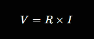Tensão (V – medida em Volts, V)
Representa a "força" que impulsiona a corrente elétrica ao longo do circuito.
Se compararmos a um sistema hidráulico, seria equivalente à pressão da água dentro de um cano.
Calcular a tensão (V):
Use a fórmula original: V = R × I. Exemplo: Se a corrente é 3 A e a resistência é 4 Ω, a tensão será V = 3 × 4 = 12V.
Corrente (I – medida em Ampères, A)
Indica a quantidade de carga elétrica que se desloca por um condutor em determinado tempo.
No exemplo do cano de água, seria similar à quantidade de líquido passando por ele a cada segundo.
Calcular a corrente (I):
Rearranje a fórmula: I = V / R. Exemplo: Se a tensão é 12 V e a resistência é 6 Ω, a corrente será I = 12 / 6 = 2 A.
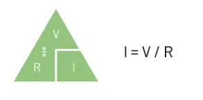Resistência Elétrica (R – medida em Ohms, Ω)
Refere-se à oposição que um material oferece à passagem da corrente elétrica.
No caso do cano, seria como um estreitamento ou uma superfície rugosa que dificulta o fluxo da água.
Calcular a Resistência (R):
Rearranje a fórmula: R = V / I. Exemplo: Se a tensão é 10 V e a corrente é 2 A, a resistência será R = 10 / 2 = 5 Ω.
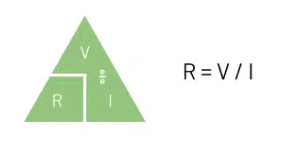2ª Lei de Ohm
A Segunda Lei de Ohm estabelece a relação entre a resistência elétrica (R) e as propriedades físicas do condutor, como seu comprimento (L), área da seção transversal (A) e resistividade do material (ρ).
Cálculo da Resistência (R)
Para determinar a resistência de um condutor, basta aplicar a fórmula:
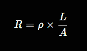Resistência (R – medida em Ohms, Ω)
Indica a oposição que um material oferece à passagem da corrente elétrica, sendo influenciada por fatores físicos do condutor.
Resistividade (ρ – medida em Ohm metro, Ω·m)
É uma propriedade específica de cada material, determinando sua capacidade de conduzir corrente elétrica.
Materiais com baixa resistividade, como cobre e alumínio, são bons condutores, enquanto materiais com alta resistividade, como borracha e vidro, são isolantes.
Comprimento do Condutor (L – medido em metros, m)
Quanto maior o comprimento do fio ou do condutor, maior será sua resistência, pois a corrente elétrica encontra mais obstáculos ao longo do percurso.
Área da Seção Transversal (A – medida em metros quadrados, m²)
A resistência elétrica é inversamente proporcional à área da seção do condutor. Ou seja, quanto maior for a espessura do fio, menor será a resistência, facilitando a passagem da corrente elétrica.
Exemplos
Usando a 1ª Lei de Ohm
Vamos supor que um circuito elétrico tenha uma resistência de 5 Ω e esteja submetido a uma tensão de 20 V. Queremos descobrir qual será a corrente elétrica que percorre esse circuito.
A 1ª Lei de Ohm é dada pela fórmula:
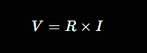Podemos rearranjar a fórmula para encontrar a corrente elétrica:
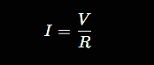Substituindo os valores:
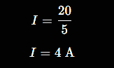Conclusão:
A corrente elétrica que percorre o circuito é 4 A (Ampères).
Usando a 2ª Lei de Ohm
Vamos calcular a resistência elétrica de um fio condutor de cobre, que possui:
-
Resistividade do cobre:
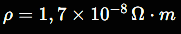 -
Comprimento do fio:
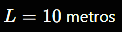 -
Área da seção transversal:
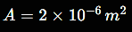
A 2ª Lei de Ohm é dada pela fórmula:
Substituindo os valores:
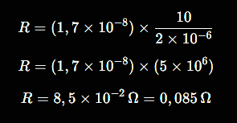Conclusão:
A resistência elétrica desse fio de cobre é 0,085 Ω.
| Tensão (V) | Corrente (I) [A] | Resistência (R) [Ω] |
|---|---|---|
| 5V | 0.5A | 10Ω |
| 10V | 0.5A | 20Ω |
| 15V | 0.5A | 30Ω |
| 10V | 1A | 10Ω |
| 20V | 1A | 20Ω |
| 30V | 1A | 30Ω |
| 20V | 2A | 10Ω |
| 40V | 2A | 20Ω |
| 60V | 2A | 30Ω |
| 30V | 3A | 10Ω |
| 60V | 3A | 20Ω |
| 90V | 3A | 30Ω |
| 40V | 4A | 10Ω |
| 80V | 4A | 20Ω |
| 120V | 4A | 30Ω |
| 50V | 5A | 10Ω |
| 100V | 5A | 20Ω |
| 150V | 5A | 30Ω |